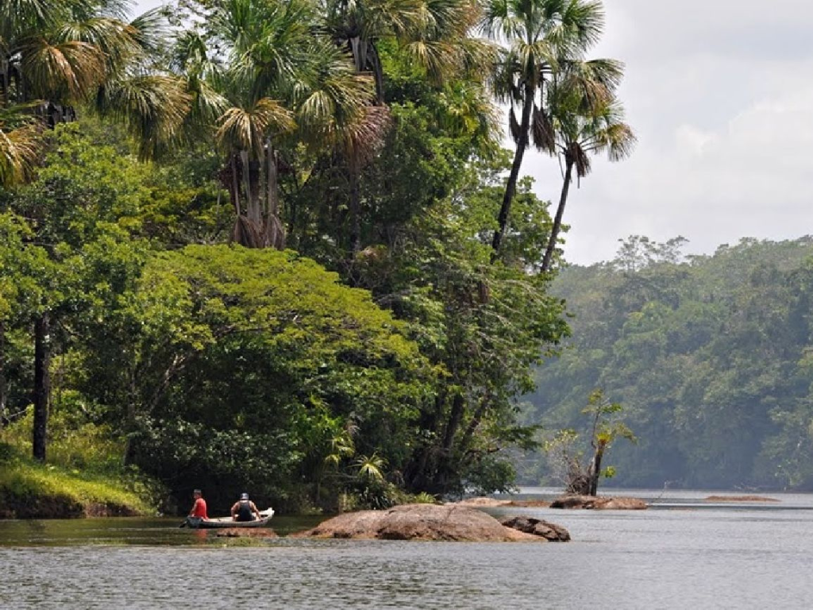

O estado do Amapá está localizado no extremo norte do Brasil e se destaca por sua grande preservação ambiental e pela rica diversidade cultural. Banhado pelo Rio Amazonas e fazendo fronteira com a Guiana Francesa, o Amapá possui extensas áreas de floresta amazônica, reservas naturais e uma das menores densidades populacionais do país. Sua capital, Macapá, é conhecida por abrigar a Fortaleza de São José e pelo famoso Marco Zero do Equador, onde passa a linha imaginária que divide os hemisférios Norte e Sul. O estado também apresenta forte influência das culturas indígena, africana e ribeirinha, refletida em suas tradições, festas populares e na culinária típica da região amazônica.
